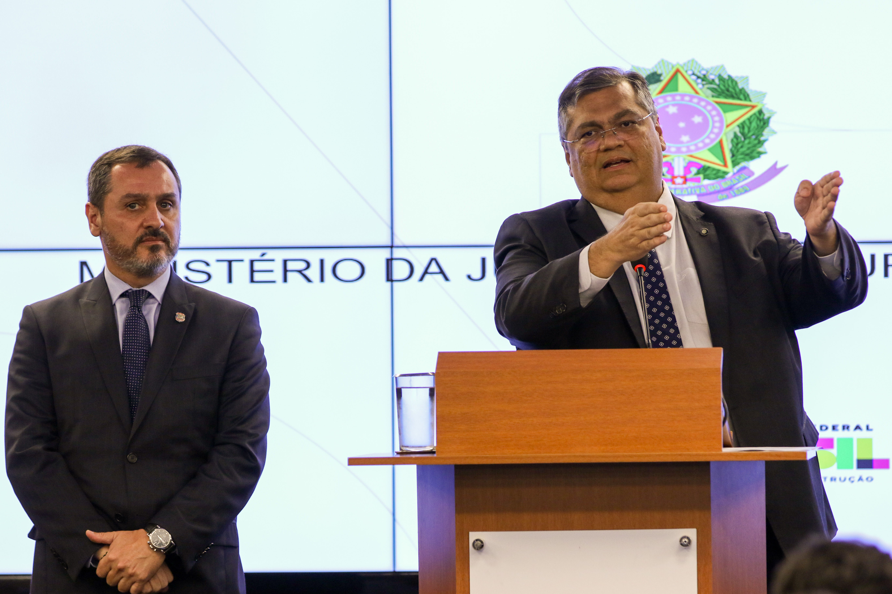

Ministro da Justiça reforça combate à corrupção em entrevista
Em entrevista coletiva realizada nesta terça-feira, o Ministro da Justiça reafirmou o compromisso do governo em intensificar o combate à corrupção no país. O anúncio destacou a importância do fortalecimento dos órgãos de controle, da integração entre as forças de segurança e da implementação de novas políticas de transparência na administração pública.
Segundo o ministro, a corrupção é um dos principais obstáculos ao desenvolvimento do Brasil, drenando recursos que poderiam ser destinados à saúde, educação e infraestrutura. Ele afirmou que o governo está empenhado em criar mecanismos mais rigorosos de fiscalização e em ampliar a cooperação internacional para rastrear fluxos financeiros ilícitos.
“Cada real desviado pela corrupção é um prato de comida a menos na mesa das famílias brasileiras. Nosso compromisso é garantir que esses recursos voltem para onde devem estar: servindo ao povo.”
— Ministro da Justiça
Fortalecimento institucional
O plano apresentado pelo Ministério prevê investimentos no fortalecimento da Polícia Federal, da Controladoria-Geral da União (CGU) e do Ministério Público. Além disso, novas equipes especializadas serão criadas para atuar em casos de desvio de recursos públicos, fraudes em licitações e lavagem de dinheiro.
O ministro também ressaltou que a tecnologia será uma aliada fundamental. Sistemas de inteligência artificial estão sendo desenvolvidos para cruzar dados de contratos públicos, identificar indícios de irregularidades e agilizar processos investigativos.
“Precisamos usar a tecnologia a favor da sociedade. A corrupção é cada vez mais sofisticada, e nossas ferramentas de investigação precisam ser ainda mais avançadas.”
— Ministro da Justiça
Novas políticas de transparência
Outra medida anunciada é a ampliação das plataformas de acesso à informação, garantindo que a sociedade civil e a imprensa tenham maior facilidade em fiscalizar a aplicação dos recursos públicos. O governo pretende implementar relatórios trimestrais acessíveis a todos os cidadãos, detalhando gastos e contratos firmados pela administração.
Além disso, será criada uma Ouvidoria Nacional Anticorrupção, que permitirá a denúncia anônima de casos suspeitos, garantindo sigilo e proteção às testemunhas.
Repercussão da entrevista
A fala do ministro repercutiu de forma ampla entre especialistas e representantes da sociedade civil. Organizações de combate à corrupção elogiaram o esforço, mas alertaram para a necessidade de garantir autonomia e independência aos órgãos de fiscalização, evitando ingerências políticas.
“O combate à corrupção exige continuidade, recursos e independência. O plano é positivo, mas será necessário garantir que não haja retrocessos com as mudanças de governo.”
— Carla Menezes, diretora da ONG Transparência Brasil
Por outro lado, alguns críticos argumentaram que as medidas ainda carecem de detalhes sobre prazos e fontes de financiamento, questionando a real viabilidade da proposta.
Perspectivas futuras
O Ministério da Justiça afirmou que os resultados iniciais das novas políticas devem começar a ser percebidos ainda este ano, com aumento no número de investigações abertas e maior rapidez na análise de contratos públicos suspeitos.
Para a população, a expectativa é que o combate efetivo à corrupção represente mais investimentos em serviços essenciais e uma administração pública mais confiável. Se bem implementado, o plano poderá marcar um passo importante rumo a um Estado mais transparente e eficiente.
« Voltar